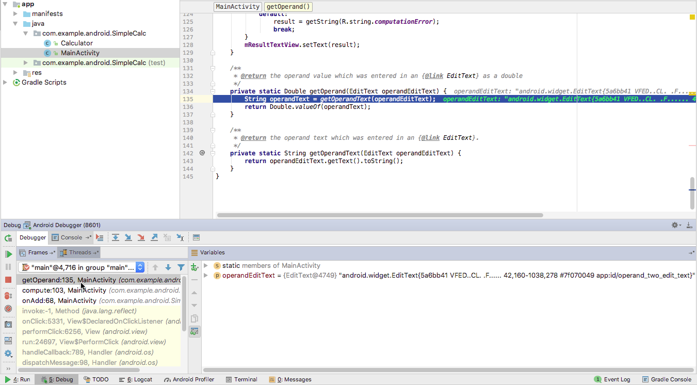

1。
この実践的なコードラボはユニット 1:Android Developer Fundamentals (Version 2) コースの一部です。このコースでは、コードラボを順番に学習することで、このコースを最大限に活用することができます。
- コースのコードラボの完全なリストについては、Codelabs for Android Developer Fundamentals (V2)を参照してください。
- すべてのコンセプトチャプター、アプリ、スライドへのリンクを含むコースの詳細については、Android DeveloperFundamentals (Version 2)を参照してください。
注：このコースでは、「Codelab」と「実践」という用語を入れ替えて使用しています。
序章
以前の実習では ログクラスを使用して、アプリの実行時に Android Studio のLogcatペインに表示されるシステム ログに情報を印刷します。アプリにロギング文を追加することは、エラーを見つけてアプリの動作を改善するための1つの方法です。もう一つの方法は、Android Studioに組み込まれたデバッガを使用することです。
この実習では、エミュレータやデバイス上でのアプリのデバッグ方法、ブレークポイントの設定と表示、コードのステップスルー、変数の調べ方を学びます。
すでに知っておくべきこと
できるようになるはずです。
- Android Studioプロジェクトを作成します。
- レイアウトエディタを使用して、EditTextとButton要素を操作する。
- Android Studio で、エミュレータとデバイスの両方でアプリをビルドして実行する。
- ラストオン、ファーストオフを含むスタックトレースを読み込んで分析します。
- Android Studioでログ ステートメントを追加し、システム ログ（Logcatペイン）を表示します。
What you'll learn
- エミュレータまたはデバイス上でデバッグモードでアプリを実行する方法。
- アプリの実行を段階的に実行する方法。
- ブレークポイントを設定して整理する方法
- デバッガで変数を調べて変更する方法
What you'll do
- SimpleCalc アプリをビルドする。
- SimpleCalc のコードにブレークポイントを設定して表示します。
- 実行中のコードをステップスルーします。
- 変数を調べ、式を評価します。
- サンプルアプリの問題を特定して修正する
SimpleCalcアプリは、2つのEditText要素と4つのButton要素を持っています。2つの数字を入力してButtonをクリックすると、アプリはそのButtonの計算を行い、結果を表示します。
この実践では、SimpleCalcアプリを自分でビルドすることはありません。完全なプロジェクトはSimpleCalcで入手できます。このタスクでは、Android StudioでSimpleCalcプロジェクトを開き、アプリの主要な機能の一部を探索します。
1.1 SimpleCalcプロジェクトをダウンロードして開く
- SimpleCalcをダウンロードし、ファイルを解凍します。
- Android Studioを起動し、「ファイル」→「開く」を選択します。
- SimpleCalcのフォルダに移動し、そのフォルダファイルを選択し、OKをクリックします。SimpleCalcプロジェクトがビルドされます。
- プロジェクト] > [Android] ペインがまだ開いていない場合は、[プロジェクト] > [Android] ペインを開きます。
警告。このアプリには、発見して修正するエラーが含まれています。デバイスやエミュレータでアプリを実行すると、アプリのクラッシュなど予期せぬ動作に遭遇する可能性があります。
1.2 レイアウトを探る
- activity_main.xmlを開きます。
- テキスト］タブをクリックしてXMLコードを表示します。
- レイアウトのプレビューを表示するには、[プレビュー]タブをクリックします。
レイアウトのXMLコードとデザインを確認し、以下の点に注意してください。
- レイアウトには、入力用の2つのEditText要素、計算用の4つのButton要素、結果を表示するための1つのTextViewが含まれています。
- 各計算ボタンは、それ自身のandroid:onClickクリックハンドラ（onAdd , OnSub など）を持っています。
- 結果のためのTextViewは、デフォルトではテキストを持っていません。
- つのEditText要素は、android:inputType属性と値"numberDecimal"を持っています。この属性は、EditTextが数字のみを入力として受け入れることを示しています。画面上に表示されるキーボードには数字のみが入力されます。EditText要素の入力タイプについては、後の実践で詳しく学びます。
1.3 アプリのコードを探る
- プロジェクト] > [Android] ペインで、[アプリ] > [java] フォルダを展開します。このプロジェクトには、MainActivityクラスに加えて、ユーティリティのCalculatorクラスも含まれています。
- 電卓を開き、コードを調べます。電卓で実行できる操作はOperator enum で定義されており、操作メソッドはすべてpublic であることに注意してください。
- MainActivity を開き、コードとコメントを確認します。
次の点に注意してください。
- 定義されているすべてのandroid:onClickクリックハンドラは、Calculator.Operator 列挙の値の 1 つとして操作名を指定して、プライベートのcompute()メソッドを呼び出します。
- compute() メソッドは、プライベートメソッドgetOperand() を呼び出します (続いてgetOperandText () を呼び出します)。
- compute() メソッドは、オペランド名のスイッチを使用して、Calculatorインスタンス(mCalculator) の適切なメソッドを呼び出します。
- Calculatorクラスの計算メソッドは、実際の演算を行い、値を返します。
- compute()メソッドの最後の部分は、計算結果でTextViewを更新します。
1.4 アプリを実行する
アプリを実行し、以下の手順に従ってください。
- 計算に整数値と浮動小数点値の両方を入力します。
- 小数点以下の大きな端数を持つ浮動小数点値を入力します（例：1.6753456）。
- 数字をゼロで割る。
- EditText要素の片方または両方を空のままにして、任意の計算を試してみてください。
- Android Studio ウィンドウの下部にあるLogcatタブをクリックしてLogcatペインを開きます（まだ開いていない場合）。アプリがエラーを報告するポイントのスタックトレースを調べます。
SimpleCalc のEditText要素の一方または両方が空の場合、アプリは下図のように例外を報告し、システムログにはアプリがエラーを発生させた時点での実行スタックの状態が表示されます。スタックトレースは通常、エラーが発生した理由についての重要な情報を提供します。
このタスクでは、Android Studio のデバッガについて紹介し、ブレークポイントを設定してデバッグモードでアプリを実行する方法を学びます。
2.1 デバッグモードでアプリを起動して実行する
- Android Studioで、[実行] > [デバッグアプリ]を選択するか、ツールバー の[デバッグ]アイコンを クリックします。
- アプリがすでに実行中の場合は、デバッグモードでアプリを再起動するかどうかを尋ねられます。アプリを再起動]をクリックします。
Android Studio は、エミュレータまたはデバイス上でアプリをビルドして実行します。デバッグはどちらの場合でも同じです。Android Studio がデバッガを初期化している間、アプリを使用する前にデバイス上に「デバッガを待っています」というメッセージが表示されることがあります。
- Android Studioウィンドウの下部にある「デバッグ」タブをクリックすると、「デバッグ」ペインが表示されます（または、「表示」→「ツールウィンドウ」→「デバッグ」を選択）。ペインの[デバッガ]タブがすでに選択されており、[デバッガ]ペインが表示されているはずです。
2.2 ブレークポイントの設定
ブレークポイントとは、変数の検証や式の評価などの他のアクションを実行するためにアプリの通常の実行を一時停止したり、ランタイム エラーの原因を特定するためにコードを一行ずつ実行したりするコード内の場所のことです。実行可能なコード行にブレークポイントを設定することができます。
- MainActivityを開き、compute()メソッドの4行目(try文の直後の行)をクリックします。
- エディタペインの左側のガッターで、その行の行番号の横をクリックしてください。その行に赤い点が現れ、ブレークポイントを示しています。赤い点は、アプリがすでにデバッグモードで実行されている場合、チェックマークが含まれています。
別の方法として、[実行] > [行のブレークポイントを切り替える]を選択するか、Control-F8（Macの場合はCommand-F8）を押して、行のブレークポイントを設定またはクリアすることができます。
間違ってブレークポイントをクリックしてしまった場合は、ブレークポイントをクリックすることで元に戻すことができます。実行できない行をクリックした場合、赤い点には「x」が含まれ、その行は実行できないという警告が表示されます。
- SimpleCalcアプリで、EditText要素に数字を入力し、計算ボタン要素のいずれかをクリックします。
アプリの実行は、設定したブレークポイントに到達すると停止し、デバッガは下の図に示すように、そのブレークポイントでのアプリの現在の状態を表示します。
上の図は、デバッガとコンソールタブのあるデバッグペインを示しています。デバッガ] タブを選択すると、以下の機能を持つ [デバッガ] ペインが表示されます。
- Framesタブ**:**クリックすると、指定されたスレッドの現在の実行スタックのフレームが表示される **Frames** ペインが表示されます。実行スタックには、アプリと Android ランタイムで呼び出された各クラスとメソッドが表示され、最新のメソッドが一番上に表示されます。
スレッド] タブをクリックして、[フレーム] ペインを [スレッド] ペインに置き換えます。アプリは現在メインスレッドで実行されており、アプリはMainActivityのcompute()メソッドを実行しています。
- ウォッチボタン**:**クリックすると、**変数**ペイン内の**ウォッチ**ペインが表示され、設定した変数ウォッチの値が表示されます。ウォッチを使用すると、プログラム内の特定の変数を追跡し、プログラムの実行中にその変数がどのように変化するかを確認することができます。
- 変数ペイン**:**現在のスコープ内の変数とその値が表示されます。アプリの実行のこの段階で、利用可能な変数は、this（アクティビティ）、operator（メソッドが呼び出されたCalculator.Operatorからの演算子名）、EditText要素とTextView のグローバル変数です。このペインの各変数には、変数のオブジェクト プロパティのリストを展開するための展開アイコンがあります。変数を展開して、そのプロパティを調べてみてください。
2.3 アプリの実行を再開する
実行 > プログラムの再開を選択するか、デバッガウィンドウの左側にある再開アイコンをクリックして、アプリの実行を再開します。
SimpleCalc アプリは実行を継続し、次にコード実行がブレークポイントに到達するまでアプリと対話することができます。
2.4 実行中のアプリをデバッグする
アプリがすでにデバイスやエミュレータ上で実行されていて、そのアプリをデバッグしたい場合は、すでに実行されているアプリをデバッグモードに切り替えることができます。
- SimpleCalc アプリを通常通り、[実行 ]
![with the Run [ICON HERE] icon. [IMAGEINFO]: ic_run.png, Run icon](img/5cf611b753940b18.png) アイコンで実行します。
アイコンで実行します。 - 実行] > [デバッガを Android プロセスに添付] を選択するか、ツールバーの[添付 ] アイコンをクリックします。
- 表示されるダイアログからアプリのプロセスを選択します（下図）。OK]をクリックします。
デバッグペインが開いた状態で表示され、デバッグ モードで起動したかのようにアプリをデバッグすることができるようになります。
注意: [ デバッグ] ペインが自動的に表示されない場合は、画面下部の [デバッグ] タブをクリックします。まだ選択されていない場合は、[デバッグ]ペインの[デバッガ]タブをクリックして、[デバッガ]ペインを表示します。
このタスクでは、アプリを 1 行ずつ実行したり、ブレークポイントを使って作業したり、変数を調べたりするなど、Android Studio デバッガーのさまざまな機能を探っていきます。
3.1 Step through your app's execution
ブレークポイントの後、デバッガを使用して、アプリ内のコードを 1 行ずつ実行し、アプリの実行中に変数の状態を調べることができます。
- 最後のタスクで設定したブレークポイントで、Android Studioでアプリをデバッグします。
- アプリで、両方の
EditText要素に数字を入力し、追加ボタンをクリックします。
アプリの実行が先ほど設定したブレークポイントで停止し、デバッガペインにアプリの現在の状態が表示されます。現在の行はコード内でハイライト表示されます。
- デバッガ
 ウィンドウの上部にある[ステップ オーバー]ボタンをクリックします。
ウィンドウの上部にある[ステップ オーバー]ボタンをクリックします。
デバッガは、compute()メソッドの現在の行(ブレークポイントがあるところ、オペランドOneの代入)を実行し、ハイライトがコードの次の行(オペランドTwoの代入)に移動します。変数ペインは、新しい実行状態を反映するように更新され、変数の現在の値は、ソースコードの各行の後にイタリック体で表示されます。
また、実行 > ステップオーバーを使用するか、F8を押してコードをステップオーバーすることもできます。
- 次の行（
オペランドTwoの代入）で、Step Into アイコンをクリックします。
ステップイントゥは、現在の行でのメソッド呼び出しの実行にジャンプします（そのメソッドを実行して同じ行に残るのと比較して）。この場合、その割り当てにはgetOperand() への呼び出しが含まれているため、デバッガはMainActivityコードをそのメソッド定義までスクロールします。
メソッドに足を踏み入れると、[フレーム] ペインが更新され、呼び出しスタック内の新しいフレーム (ここではgetOperand() が表示されます。フレーム] ペインのいずれかの行をクリックすると、メソッドが呼び出された前のスタック フレーム内のポイントを確認できます。

メソッドにステップインするには、[実行] > [ステップイントゥ] または F7 を使用することもできます。
- ステップオーバー をクリックして、
getOperand()の各行を実行します。メソッドが完了すると、デバッガは最初にメソッドにステップインしたポイントに戻り、すべてのパネルが新しい情報を表示するように更新されることに注意してください。 - ステップ・オーバーを 2 回クリックして、実行ポイントを
ADDのcase文内の最初の行に移動します。 - ステップ・イントゥ をクリックします。
デバッガは、Calculatorクラスで定義された適切なメソッドを実行し、Calculator.javaファイルを開き、そのクラスの実行ポイントまでスクロールします。ここでも、さまざまなペインが新しい状態を反映するように更新されます。
- Step Out アイコンを使用して、残りの計算メソッドを実行し、
MainActivityのcompute()メソッドにポップアウトします。その後、Compute()メソッドのデバッグを続けられます。
また、Run > Step Outを使うか、 Shift-F8キーを押して、メソッドの実行から抜け出すこともできます。
3.2 ブレークポイントを使った作業
ブレークポイントを使用して、アプリのその部分をデバッグするためにアプリの実行を中断したいコードのどこにあるかを示します。
- 最後のタスクで設定したブレークポイントを、
MainActivityのcompute()メソッドの開始点で見つけます。 switch文の先頭にブレークポイントを追加します。- この新しいブレークポイントを右クリックして条件を入力し、下図のように、Conditionフィールドに次のテストを入力します。
(operandOne == 42)||(operandTwo == 42)
- 完了をクリックします。
この2つ目のブレークポイントは、条件付きブレークポイントです。アプリの実行は、条件のテストが真の場合にのみ、このブレークポイントで停止します。この場合、入力したオペランドの1つまたは他のオペランドが42である場合にのみ、式が真になります。ブール値を返す限り、条件として任意のJava式を入力することができます。
- デバッグ・モード（[実行] > [デバッグ]）でアプリを実行するか、既に実行中の場合は [再開]をクリックします。アプリで、42以外の2つの数字を入力し、[追加]ボタンをクリックします。実行は、
compute()メソッドの最初のブレークポイントで停止します。 - Resumeをクリックして、アプリのデバッグを続けます。条件が満たされていなかったため、2つ目のブレークポイントで実行が停止しなかったことを確認してください。
- アプリで、最初の
EditTextに42を入力し、任意のButtonをクリックします。最初のブレークポイントの後に実行を再開するには、[再開]をクリックします。スイッチステートメントの 2 番目のブレークポイント（条件付きブレークポイント）では、条件が満たされたために実行が開始されていることを確認してください。 compute()の最初のブレークポイントを右クリック(またはControl-click)し、Enabledのチェックを外してください。Doneをクリックします。ブレークポイントのアイコンが緑のドットと赤枠になったことを確認してください。
ブレークポイントを無効にすると、コードから実際にブレークポイントを削除しなくても、一時的に"ミュート"することができます。ブレークポイントを完全に削除すると、そのブレークポイントのために作成した条件も失われるので、無効にした方が良い選択となることが多いです。
また、[Mute Breakpoints ]アイコンを使用して、アプリ内のすべてのブレークポイントを一度にミュートすることもできます。
- デバッガウィンドウの左端にある[View Breakpoints ] をクリックします。 ブレークポイント] ウィンドウが表示されます。
ブレークポイント] ウィンドウでは、アプリ内のすべてのブレークポイントを表示したり、個々のブレークポイントを有効または無効にしたり、条件、他のブレークポイントへの依存関係、ロギングなどのブレークポイントの追加機能を追加したりすることができます。
ブレークポイント］ウィンドウを閉じるには、［完了］をクリックします。
3.3 変数の検査と変更
Android Studio デバッガーを使用すると、アプリの実行中にアプリ内の変数の状態を調べることができます。
- SimpleCalc アプリがまだ実行されていない場合は、デバッグ モードで実行します。
- アプリで、2つの数字を入力し、そのうちの1つは42と入力して、Addボタンをクリックします。
compute()の最初のブレークポイントはまだミュートされています。実行は2つ目のブレークポイント(switch文の条件付きブレークポイント)で停止し、デバッガが表示されます。
- 変数ペインで、
operandOne変数とoperandTwo変数が、アプリに入力した値を持っていることを確認してください。
この変数はMainActivityオブジェクトです。拡張アイコンをクリックすると、そのオブジェクトのメンバ変数のリストが表示されます。展開アイコンをもう一度クリックすると、リストが閉じます。- このような場合には、このオブジェクトには、そのオブジェクトに含まれているすべての情報が含まれている必要があります。
- オペランド
１の値を10に変更して、Return キーを押します。 - このようにして、
オペランドの値を10に変更し、Return キーを押します。 - 例えば、ステップ 2 で追加
ボタンをクリックしてから、アプリの結果は 20 になりました。 - アプリを実行し続けるには、[再開]アイコンをクリックします。
- アプリでは、元のエントリ（42を含む）が
EditText要素に保存されています（これらの値は、アプリ内でのみ変更されました。(それらの値はデバッガでのみ変更されました。) [追加]ボタンをクリックします。実行が再びブレークポイントで停止します。 - 式の評価 ] アイコンをクリックするか、[ 実行] > [式の評価] を選択します。また、任意の変数を右クリック(またはControl-click) して、[式の評価] を選択することもできます。
コード・フラグメントの評価ウィンドウが表示されます。このウィンドウを使用して、アプリ内の変数とオブジェクトの状態を調べます。このウィンドウには、任意のコードを入力できます。
- 上図のように、[コードフラグメントの評価] ウィンドウの上部フィールドにステートメントmOperandOneEditText.getHint();を入力し、[評価] をクリックします。
- 結果フィールドには、その式の結果が表示されます。この
EditTextのヒントは、そのEditText のXML で元々定義されていた通り、"Type Operand 1" という文字列です。
式を評価して得られる結果は、アプリの現在の状態に基づいています。式を評価する時のアプリ内の変数の値によっては、異なる結果が得られる場合があります。
式の評価を使用して変数またはオブジェクトのプロパティの値を変更すると、アプリの実行状態が変更されることにも注意してください。
- 閉じる］をクリックして、［評価するコード フラグメント］ウィンドウを閉じます。
注意:コーディングの課題はすべて任意であり、後のレッスンの前提条件ではありません。
課題。タスク 1 の最後に、EditText要素の 1 つに値がない状態で SimpleCalc アプリを実行しようとしたところ、エラーが発生しました。デバッガを使用してコードを実行し、このエラーが発生した理由を正確に特定してください。このエラーの原因となるバグを修正してください。
- Logcatタブをクリックして Android Studio でログ情報を表示します。
- デバッグアイコンをクリックするか、[実行] > [デバッグアプリ]を選択して、デバッグモードでアプリを実行します。
- デバッグ] タブをクリックすると、[デバッグ] ペインが表示されます。デバッグ］ペインの［デバッガ］タブをクリックして、［デバッガ］ペインを表示します（まだ選択されていない場合）。
- デバッガペインには、フレーム、特定のフレーム内の変数、ウォッチ（プログラム実行中の変数のアクティブなトラッキング）が表示されます。
- ブレークポイントは、他のアクションを実行するためにアプリの通常の実行を一時停止したいコード内の場所です。エディタ ウィンドウの左ガッターでターゲット行のすぐ横をクリックして、デバッグ ブレークポイントを設定またはクリアします。
関連するコンセプトのドキュメントは「3.1: Android Studio デバッガ」にあります。
9。
Android Studio のドキュメントです。
- Android Studio ユーザーガイド
- アプリのデバッグ
- ログの書き込みと表示
- スタックトレースの分析
- Android デバッグブリッジ
- アンドロイドプロファイラー
- ネットワークプロファイラ
- CPUプロファイラ
- トレースビュー
その他。
10。
このセクションでは、インストラクターが主導するコースの一部として、このコードラボを通して作業する学生のための可能な宿題をリストアップします。以下のことを行うのはインストラクター次第です。
- 必要に応じて宿題を割り当てる。
- 宿題の提出方法を学生に伝える。
- 宿題の割り当てを評価します。
インストラクターは、これらの提案を少しでも多くのように使用することができますし、彼らが適切であると感じる他の宿題を割り当てるために自由に感じる必要があります。
あなた自身でこのコードラボを介して作業している場合は、あなたの知識をテストするためにこれらの宿題の割り当てを使用して自由に感じています。
アプリをビルドして実行する
SimpleCalcアプリを開きます。
- MainActivity で、onAdd()メソッドの 1 行目にブレークポイントを配置します。
- デバッガでアプリを実行します。アプリで追加操作を実行します。実行はブレークポイントで停止します。
- Step Intoをクリックして、アプリの実行をステップバイステップで追跡します。 Step Intoは Android フレームワークからファイルを開いて実行するので、Android 自体がコード上でどのように動作するかを見ることができます。
- 現在のスタック フレームとローカル変数のコードをステップスルーすると、デバッグペインがどのように変化するかを調べます。
- エディタペインのコード自体が、各行が実行されるたびにどのように注釈されるかを調べます。
- 実行スタックが深すぎて理解できない場合は、ステップ アウトをクリックしてアプリに戻ります。
以下の質問に答えてください。
質問1
デバッガなしでSimpleCalcアプリを実行します。EditText要素の片方または両方を空のままにして、任意の計算を試してみてください。なぜエラーが発生したのでしょうか？
- java.lang.NumberFormatException: empty String
- W/OpenGLRendererを使用しています。EGL_SWAP_BEHAVIOR_PRESERVEDで設定の選択に失敗しました。
- アプリがメインスレッドで作業をしすぎている可能性があります。
- コードキャッシュの容量を128KBに増やしました。
質問2
ブレークポイントがある現在の行を実行し、コードの次の行で停止するために、[デバッグ]ペインで実行する関数はどれですか?1つ選んでください。
- ステップイントゥ
- ステップオーバー
- ステップアウト
- 履歴書の書き方
質問3
ブレークポイントがある現在の行からメソッド呼び出しの実行にジャンプするために、[デバッグ]ペインで実行する関数はどれですか？1つ選んでください。
- ステップイントゥ
- ステップオーバー
- ステップアウト
- 履歴書の書き方
アプリを提出して採点を受ける
学年別ガイダンス
この宿題に提出するアプリはありません。
11。次のコーデラボ
Android Developer Fundamentals (V2)コースの次の実践的なコードラボを探すには、Codelabs for Android Developer Fundamentals (V2)を参照してください。
概念章、アプリ、スライドへのリンクを含むコースの概要については、Android DeveloperFundamentals (Version 2)を参照してください。